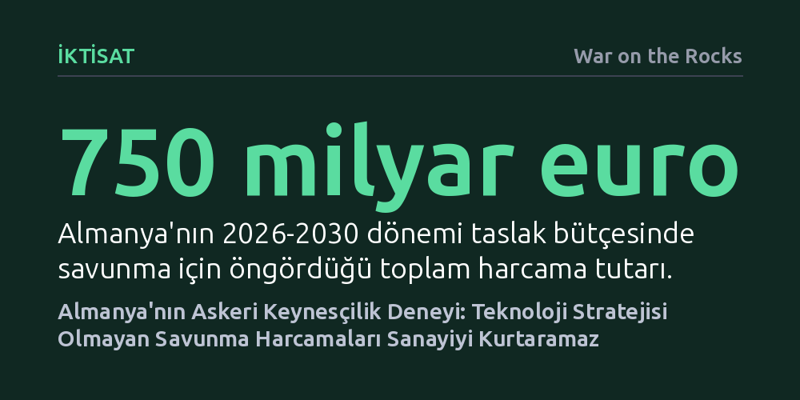

IKTISAT · War on the Rocks · 2026-10-21
Almanya, bütçe kısıtlarını kaldırarak 750 milyar euroluk dev savunma bütçesiyle krizdeki sanayisini canlandırmaya çalışıyor. Ancak kaynaklar öncü teknolojiler yerine geleneksel silahlara yöneldiği için bu askeri Keynesçilik deneyi uzun vadeli ekonomik dönüşüm yaratmaktan uzak kalıyor.
Almanya'nın tarihi savunma harcamalarının ardındaki temel itici gücün yalnızca Rusya tehdidi değil, Çin rekabetiyle sarsılan geleneksel sanayisini borçlanmayla kurtarma manevrası olduğunu ortaya koyuyor.

Mart 2025'te Almanya, yalnızca anayasal bir mali kuralı gevşetmekle kalmadı; kötüleşen Avrupa güvenlik mimarisi ile çökmekte olan geleneksel sanayi modelini tek bir anayasal uzlaşmada birleştirdi. Yapılan reformla savunma harcamaları fiilen anayasal borç freninin dışına çıkarıldı ve tarihte benzeri az görülen bir askeri harcama artışının önü açıldı. Berlin yönetimi, 2021 yılında savunmaya 46,6 milyar euro ayırırken, 2026-2030 dönemi için yaklaşık 750 milyar euroluk devasa bir savunma bütçesi planlıyor. Bu miktar, aynı dönemde 338,2 milyar euro harcaması beklenen Fransa'nın bütçesinin iki katından fazla.
Kamuoyundaki genel kabul, bu tarihi geri dönüşün ardındaki temel nedenin Rusya'nın saldırganlığı ve ABD'nin Avrupa'ya taahhütlerine dair artan şüpheler olduğunu öne sürüyor. Oysa madalyonun asıl kritik ve çok daha az tartışılan yüzü bambaşka bir amaca dayanıyor: Berlin, bütçe açıklarıyla finanse edilen bu dev askeri genişlemeyi, resesyona sürüklenen sanayisini canlandırmak için bir manivela olarak kullanmaya çalışıyor. Karşımızdaki tablo, tam anlamıyla askeri Keynesçilik doktrininin modern bir yeniden keşfidir.
Alman sanayisinin karşı karşıya olduğu krizin kökeninde, ilkine kıyasla Avrupa'nın teknolojik omurgasını doğrudan vuran "Çin Şoku 2.0" yatıyor. Pekin yönetimi, iç tüketiminin eritemediği devasa bir sanayi kapasite fazlası inşa etti. Bu fazla; yapay biçimde düşük tutulan yuan kuru ve OECD ülkelerinin sekiz katına varan kamu sübvansiyonlarının desteğiyle Avrupa'nın açık ve varlıklı pazarına akıtılıyor. Bu durum Alman ekonomisinin belkemiğini oluşturan otomotiv, makine, kimya ve yeşil enerji sektörlerini derinden sarsıyor ve Almanya her ay yaklaşık 10.000 nitelikli sanayi istihdamını kaybediyor.
İşte bu noktada savunma harcamaları kritik bir "sanayi dönüşüm mekanizması" olarak devreye sokuluyor. Çin rekabetinin vurduğu sektörler (hassas mühendislik, araç üretimi, itki sistemleri, optik, malzeme teknolojileri ve yazılım), modern askeri teçhizatın gereksinimleriyle neredeyse birebir örtüşüyor. Savunma bütçesi; sivil pazarı daralan fabrikalara uzun vadeli ve meşru bir talep yaratarak nitelikli işgücünü koruyor, otomotiv yan sanayisini zırhlı araç, füze ve uydu üreticiliğine doğru dönüştüren bir köprü kuruyor.
Almanya'nın borçlanma tavanını kaldıran anayasa değişikliği, siyaset biliminde farklı çıkar gruplarının taleplerini tek pakette toplayıp maliyeti genele yayması anlamına gelen "al-gülüm ver-gülüm" (logrolling) yönteminin ders kitaplarına girecek bir örneği oldu. Şubat 2025 seçimlerinin ardından, yeni seçilen parlamento göreve başlamadan hemen önce giden meclis alelacele olağanüstü toplandı. Aralarında bir daha meclise dönemeyecek 333 vekilin de bulunduğu giden parlamento, merkez partilerin sahip olduğu son üçte iki çoğunluk fırsatını kullanarak anayasayı değiştirdi; zira yeni parlamentoda aşırı sağ ve aşırı sol partiler değişikliği bloke edecek sandalye sayısına ulaşıyordu.
Bu uzlaşma paketi, merkezdeki tüm partilere cazip kazanımlar sundu. Güvenlik odaklı muhafazakarlar savunma bütçesi için borç freninden sınırsız bir muafiyet elde etti. Sosyal Demokratlar, savunma harcamalarının yanında 500 milyar euroluk bir altyapı ve iklim yatırımı fonunu garanti altına aldı. Yeşiller ise bu fonun 100 milyar eurosunun iklim dönüşümüne ayrılmasını, anayasaya 2045 iklim nötr hedefinin yazılmasını ve siber güvenlik ile sivil koruma harcamalarının da borç muafiyetine dahil edilmesini sağladı. Böylece her aktörün kendi önceliğini "ulusal dayanıklılık ve modernleşme" ortak dili altında paketlediği geniş bir siyasi koalisyon inşa edildi. Siparişlerin yüzde 55'inin doğrudan Alman firmalarına gitmesi bu koalisyonu güçlendirirken, Avrupa ortak alımlarının yalnızca yüzde 3'te kalması Fransa ile ciddi sürtüşmelere yol açtı.
Savunma harcamaları yoluyla iktisadi canlanma arayışı yeni bir fikir değil. Bunun en belirgin tarihsel örneği, ABD'nin 1950-1953 Kore Savaşı döneminde bütçesini dörde katladığı askeri Keynesçi hamleydi. Ancak Amerikan modelinin başarılı olmasını sağlayan dört temel faktör vardı: Atıl işgücünün bulunması, ülkenin net silah ihracatçısı olması, doların küresel rezerv para ayrıcalığı ve en önemlisi harcamaların orantısız biçimde uç teknolojilere akıtılması. Jet itki sistemleri, radar, nükleer fizik, yarı iletkenler ve uzay teknolojilerine yapılan askeri yatırımlar, daha sonra sivil ekonomiye devasa bir verimlilik sıçraması ve onlarca yıllık Amerikan imalat üstünlüğü olarak geri döndü.
Almanya bugün ilk üç koşulun bir kısmını sağlasa da en belirleyici unsuru tamamen ıskalıyor: Harcamaları inovasyonun öncü teknolojilerine yönlendirmek. 2020 ile 2026 yılları arasında Alman savunma alımlarının yüzde 61'i geleneksel platformlara harcanırken; otonom sistemler, gelişmiş hava savunma ağları ve siber gibi "yeni paradigma" teknolojilerine ayrılan pay yalnızca yüzde 12 oldu ve bu oran yıllar içinde yüzde 9'a kadar geriledi. Meclisin onayladığı 21 milyar euroluk askeri üniforma ihalesi istihdamı koruyabilir, fakat interneti ve hayalet uçakları finanse eden bir Amerikan DARPA etkisi yaratamaz.
Almanya'da savunma harcamalarının uzun vadeli verimlilik artışına dönüşememesinin arkasında derin bir kurumsal risk iştahsızlığı bulunuyor. Savunma Bakanlığı'nın 25 milyon euroyu aşan her tedarik sözleşmesi için meclis Bütçe Komisyonu'ndan ayrı onay almasını zorunlu kılan kural, köklü savunma devlerinin işine yararken yenilikçi teknoloji girişimlerini saf dışı bırakıyor. Başarısızlık halinde siyasi skandal yaşamaktan korkan milletvekilleri, üç ayda bir yazılımı güncellenen yeni bir şirketin insansız hava aracını almak yerine, bilinen üreticiden bilinen tankı sipariş etmeyi rasyonel bir korunma refleksi olarak görüyor.
Bürokrasinin hata yapmama güdüsü, askeri dönüşümün ve ekonomik inovasyonun önündeki en büyük engeli teşkil ediyor. "Siyasetçiler ve bürokratlar teknolojik başarısızlığı teknolojik duraksamadan daha fazla cezalandırmayı sürdürürse, tedarik reformları yüzeysel kalacaktır." Prototip aşamasından seri üretime geçişi finanse edecek uzun vadeli bir talep stratejisi kurulmadığı takdirde, Almanya'nın bu askeri Keynesçilik deneyi sanayideki yapısal kan kaybını sadece geçici bir süre pansuman edebilir; ülkenin rekabet gücünü yenileyemez.